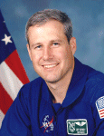

Lyndon B. Johnson Space Center
Houston, Texas 77058
|
National Aeronautics and Space Administration Lyndon B. Johnson Space Center Houston, Texas 77058 |
 |
Biographical Data |
||
Jay Clark Buckey, Jr. M.D
Payload Specialist
PERSONAL DATA: Born June 6, 1956 in New York, New York. His mother, Jean Buckey, resides in Ft. Myers, Florida. His father, Jay Buckey, Sr., is deceased. Married to the former Sarah Woodroffe Masters of Summit, New Jersey daughter of Parke and Margaret Masters. They have one son and two daughters. Recreational interests include camping, history.
EDUCATION: Graduated from W. Tresper Clarke High School in Westbury, New York, in 1973. Earned a bachelor of science degree in electrical engineering from Cornell University in 1977, and a doctorate in medicine from Cornell University Medical College in 1981. Interned at New York Hospital-Cornell Medical Center, and completed residency at Dartmouth-Hitchcock Medical Center. NASA Space Biology Fellow at University of Texas (UT) Southwestern Medical Center.
ORGANIZATIONS: American Society for Gravitational and Space Biology (Executive Board Member 1991-1994), Aerospace Medicine Association, and American College of Physicians.
SPECIAL HONORS: Meritorious service award from the University of Texas for work on Spacelab Life Sciences-1 (SLS-1) (1991), Outstanding Teacher Award from the Class of 1994 at UT-Southwestern, Distinguished Graduate USAF School of Aerospace Medicine Primary Course (1987), two NASA Certificates of Recognition for hardware developed for SLS-1, NASA Biology Fellowship (1982), Thora Halstead Young Investigator Award (1994), NASA Space Flight Medal (1998).
PUBLICATIONS: Dr. Buckey has over 20 publications in the areas of space physiology, cardiovascular regulation and echocardiographic techniques.
EXPERIENCE: Medical internship, New York Hospital-Cornell Medical Center, New York, 1981-1982; NASA Space Biology Fellow, UT-Southwestern, 1982-1984; Research Instructor, Department of Medicine, UT-Southwestern, 1984-1986; Assistant Professor Medicine, UT-Southwestern, 1986-1994; Associate Professor Medicine, UT-Southwestern, 1995; Medicine Resident, Dartmouth-Hitchcock Medical Center, 1995-1996. Associate Professor of Medicine, Dartmouth Medical School, 1996-present; Flight Surgeon, U.S. Air Force Reserve, 457th Tactical Fighter Squadron at Naval Air Station Joint Reserve Base, Fort Worth, TX, 1987-1995. Dr. Buckey took leave from Dartmouth Medical School to fly as a Payload Specialist on the Neurolab mission, STS-90.
NASA EXPERIENCE: Co-investigator and project manager for the space flight experiment "Cardiovascular Adaptation to Zero-Gravity;" Spacelab Life Sciences-1; Alternate Payload Specialist, Spacelab Life Sciences-2. Most recently, Dr. Buckey served as Payload Specialist-1 on STS-90 Neurolab (April 17 to May 3, 1998). During the 16-day Spacelab flight the seven person crew aboard Space Shuttle Columbia served as both experiment subjects and operators for 26 individual life science experiments focusing on the effects of microgravity on the brain and nervous system. The STS-90 flight orbited the Earth 256 times, covered 6.3 million miles, and logged him over 381 hours in space.
MAY 1998
{kind=link}